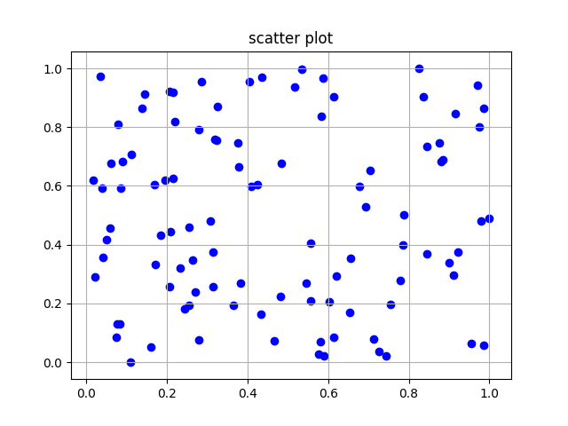

이차원행열 덧셈
이차원행열 사칙연산 / vertor 사용해 shape,차원(ndim) 출력
서로다르게생긴 행렬 곱 수행
numpy 함수 - broadcast ( 서로다른행의 덧셈 )
numpy 함수 - concatenate ( 행과 열을 추가하기위한 함수 )
numpy 함수 - indexing/slicing ( 행과열을 선택 )
numpy 함수 - iterator ( 행렬을 순서대로 불러옴 )
numpy 함수 - loadxtx ( 행과열을 선택해서 불러올 수 있도록 도와줌 )
numpy 함수 - random/sum/exp/log
numpy 함수 - max/min/argmax/argmin/ones/zeros ( 최대값,최소값,최대값위치,최소값위치,모든값1로,모든값0으로)
numpy 함수 - matplotlib (그래프제작함수)

수치미분 구현(변수1개)
수치미분 1차버전(변수1개)
다변수 함수 수치미분(편미분예제-1변수함수)
다변수 함수 수치미분(편미분예제-2변수함수)
다변수 함수 수치미분(편미분예제-4변수함수)
회귀_예제1(입력값2개)
회귀_예제2(입력값3개)
분류_예제1(0 or 1)
분류_예제2(0 or 1)